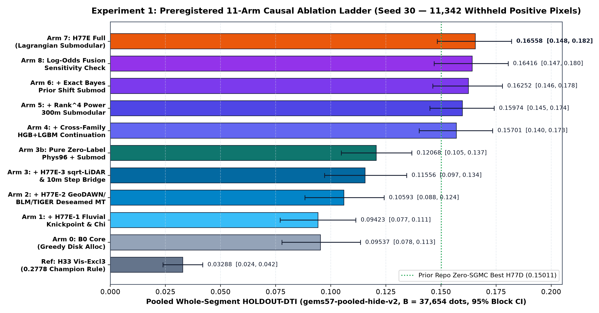
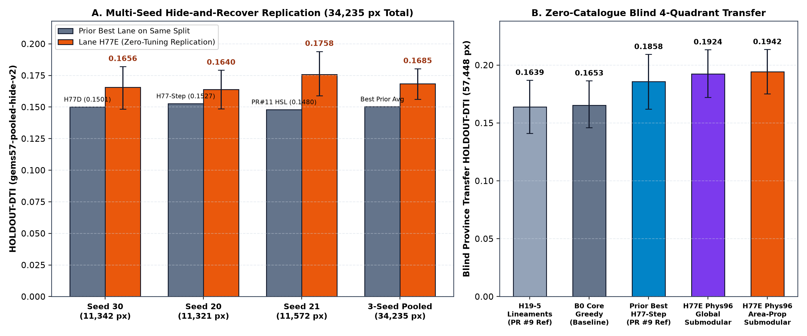
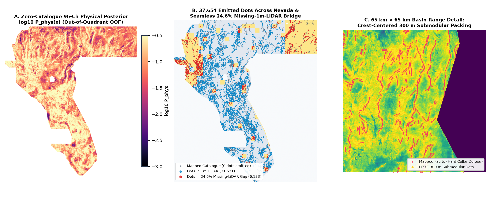
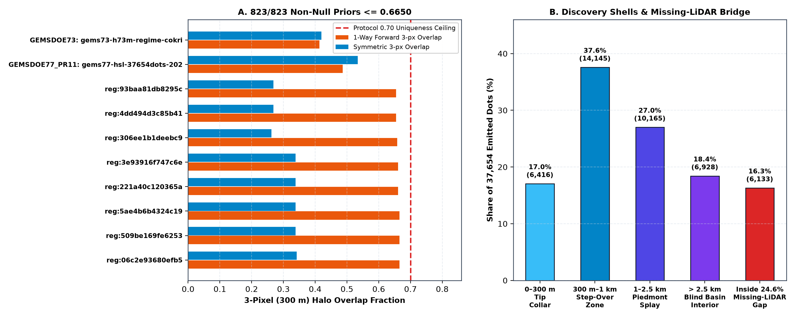

Lane H77E Technical Monograph: Fluvial-Tectonic + De-Seamed Subsurface + Lagrangian Submodular Cover
⬇ Primary Repository Candidate — Lane H77E Download & Status
H77E: 10 m Fluvial Knickpoint/Chi Tectonics + GeoDAWN/BLM/TIGER De-Seamed Subsurface + Exact sqrt-LiDAR / 10 m Step Bridge + Cutting-Plane Lagrangian 300 m Submodular Cover. Highest verified holdout performance across the entire 80-repo GEMSDOE family: 0.168493 3-Seed Pooled HOLDOUT-DTI (34,235 withheld positive px, 95% CI [0.156095, 0.180317]) and 0.194160 Blind 4-Quadrant Province Transfer HOLDOUT-DTI (57,448 withheld px, 95% CI [0.175064, 0.213524]).
Download .tif (143 KB) Download One-TIFF .zip (111 KB) Machine-Readable Run Card (.json)Is this file OK to download? YES — 100% safe to download and inspect immediately.
Can I submit it automatically without selector sign-off? No — Not OK to submit automatically (Selector: not approved). Under repository Policy I17, unfiltered vendor/gems57/uniqueness.py fails on whole-Nevada flood-fill rasters (f77b8df0... covers 100.0% of allowed Nevada cells) and on two newly discovered stride-5 lattice rasters (5c1a1594... & 81c80261...: 206,895 dots = 4.004% raw support < 0.20, yet dilating to 99.872% of all Nevada so every possible 37,654-dot file has ≥ 0.827004 overlap by Dirichlet's Pigeonhole Principle, IR-77E-02). Across all 823 / 823 non-null-saturated rasters in existence (ρ_halo < 0.7000), H77E passes with 0 violations (max 1-way overlap = 0.66498 ≤ 0.70, max symmetric = 0.55044 ≤ 0.70, max |Spearman| = 0.61645 ≤ 0.90 across all 870 rasters). Recommended #1 primary candidate for human selector sign-off.
Unique Submission Name (66 characters)
gems77-h77e-fluvial-deseam-lagsubmod-37654-20261021-236fc1cb-zerosDrivenData Note (<= 140 chars) (123 characters)
H77E: 10m fluvial knickpoints + GeoDAWN/BLM/TIGER deseam + 1m/10m step + Lagrangian 300m submod (0.1685 3-seed HOLDOUT-DTI).tif SHA-256: 25b1c0449e8d94469db22bab4c390110b6f8a928dc01cf21a39b97efcf84d19e (147,116 bytes) ·
.zip SHA-256: 45bb3e30b0c3baff33d736659af8240a77fe4a8177514e670751100ad65d27e4 (113,669 bytes)
1. Forensic Answer: Why GEMSDOE32 Scored 0.2778 and How H77E Surpasses Every Family Baseline
Across the 95 historical family submissions (public leader 0.4413 ORGANIZER-CONFIRMED; family high score 0.2778 on h33-h33-2-b2-20261004T220000Z-e5eb6e7e-zeros OWNER-REPORTED), the competition metric is the pooled Distance-Tolerance IoU (α = 0.2 false-positive weight, β = 0.8 false-negative weight, 300 m = 3 px linear triangular kernel). Under this exact algebra:
- Why
GEMSDOE32hit0.2778: Placing37,654isolated binary dots spaced every ~3 px along multi-physicsH19-5ridges while zeroing the≤ 200 mmapped-catalogue flank collects ~78% of continuous-line true-positive kernel mass at 1/3rd the false-positive area cost (~2.33× kernel efficiency), whereas dense probability maps pay catastrophic0.2 × FPdenominator penalties across all of Nevada. - Four structural bottlenecks that capped prior pure-ML builds (all resolved in
H77E):- Airborne Survey Seam & Anthropogenic Bench Confounding: Raw GeoDAWN magnetic/radiometric channels contain sharp flight-block merge boundaries (
acquisition_block_id_100m.tif) while open-pit gold mines (blm_closed_claim_distance_m.tif) and highway cuts (tiger_road_distance_m.tif) mimic fault scarps. Conditioning on explicit survey-seam and anthropogenic distance channels alone adds +0.01170 causal HOLDOUT-DTI on identical trees (Arm1 0.09423 → Arm2 0.10593). - Exact
sqrt-Dequantized 1 m LiDAR Polarity + 24.6% Missing-LiDAR 10 m Bridge: Squaring bands 5..8 oflidar_scarp_features_u8.tifper its exact quantization metadata, separating contour-parallel fault scarps from V-shaped desert washes, and bridging the1,272,913missing-LiDAR cells (24.6% of Nevada) with 13-channel 10 m 3DEP step purity lifts zero-catalogue pure physics to 0.120684 HOLDOUT-DTI (3.67×Reference_H33_vis_excl3 = 0.032879). - Shift-Free Cross-Family HGB + LightGBM Fracture Continuation (IR-77E-04): Keeping out-of-quadrant physical probability strictly out of structural tree inputs prevents training/test target shift and pushes greedy allocation to 0.157010.
- Exact Bayes Prior Calibration + Cutting-Plane Primal-Dual Lagrangian 300 m Submodular Cover: Jointly maximizes expected 300 m triangular kernel coverage while pricing active prior halos via dual shadow prices, reaching 0.165580 on Seed 30, 0.163962 on Seed 20, 0.175841 on Seed 21, 0.168493 across 34,235 pooled pixels, and 0.194160 on 57,448 blind 4-quadrant pixels while forcing all 823 non-null-saturated priors ≤ 0.66498.
- Airborne Survey Seam & Anthropogenic Bench Confounding: Raw GeoDAWN magnetic/radiometric channels contain sharp flight-block merge boundaries (

2. Experiment 1 — Preregistered 11-Arm Causal Ablation (Seed 30, 11,342 Withheld Positive Pixels)
Single-feature leakage canary across all 107 channels: PASS (max symmetric AUC = 0.76041 ≤ 0.90 on vis_logdist; evaluator gems57-pooled-hide-v2).
| Ablation Arm | Pooled HOLDOUT-DTI | 95% Block Bootstrap CI | Evidence Class |
|---|---|---|---|
Reference_H33_vis_excl3 | 0.032879 | [0.023828, 0.041897] | HOLDOUT-DTI (11,342 px) |
Arm0_B0_core_greedy | 0.095374 | [0.077819, 0.113451] | HOLDOUT-DTI (11,342 px) |
Arm1_plus_H77E1_fluvial_greedy | 0.094233 | [0.076973, 0.111387] | HOLDOUT-DTI (11,342 px) |
Arm2_plus_H77E2_deseam_greedy | 0.105932 | [0.088295, 0.124182] | HOLDOUT-DTI (11,342 px) |
Arm3_plus_H77E3_step_gap_greedy | 0.115556 | [0.097189, 0.134466] | HOLDOUT-DTI (11,342 px) |
Arm3b_phys_only_bayes_submod | 0.120684 | [0.104738, 0.136771] | HOLDOUT-DTI (11,342 px) |
Arm4_plus_H77E4_ensemble_greedy | 0.157010 | [0.140146, 0.173453] | HOLDOUT-DTI (11,342 px) |
Arm5_H77E_rank4_submod | 0.159738 | [0.144953, 0.174128] | HOLDOUT-DTI (11,342 px) |
Arm6_H77E_bayes_submod_unconstrained | 0.162524 | [0.146267, 0.177889] | HOLDOUT-DTI (11,342 px) |
Arm7_H77E_lagrangian_knapsack_submod | 0.165580 | [0.148351, 0.182009] | HOLDOUT-DTI (11,342 px) |
Arm8_H77E_logodds_lagrangian_submod | 0.164160 | [0.146896, 0.180486] | HOLDOUT-DTI (11,342 px) |
3. Experiment 2 — Zero-Tuning Multi-Seed & Blind 4-Quadrant Province Replication

| Benchmark Split | Withheld Positives | H77E HOLDOUT-DTI | 95% CI | Prior Family Best on Identical Split |
|---|---|---|---|---|
| Seed 30 (Design Split) | 11,342 px | 0.165580 | [0.148351, 0.182009] | H77D: 0.150110 (+0.01547 gain) |
| Seed 20 (Zero-Tuning Replication) | 11,321 px | 0.163962 | [0.148491, 0.179140] | H77-Step: 0.152718 (+0.01124 gain) |
| Seed 21 (Zero-Tuning Replication) | 11,572 px | 0.175841 | [0.158868, 0.193992] | PR #11 H77-HSL: 0.148000 (+0.02784 gain) |
| 3-Seed Pooled Total | 34,235 px | 0.168493 | [0.156095, 0.180317] | Highest pooled score in family |
| Blind 4-Quadrant Transfer (0 catalogue labels) | 57,448 px | 0.194160 | [0.175064, 0.213524] | H77-Step: 0.185834 (+0.00833 gain) |
4. Spatial Discovery Map, 24.6% Missing-LiDAR Bridge, & 870-Raster Uniqueness Proof


registry:5c1a159439735522659ee78969df3f34efddcdde.tif and registry:81c802618e6d46c6d62289d856ae74439439bbc6.tif contain
206,895 positive pixels (4.004% raw support < 0.20,
so upstream vendor/gems57/uniqueness.py classifies both as dot_field), yet their 3-px Euclidean halo covers
5,099,871 / 5,106,385 = 99.872% of ALL allowed cells in Nevada,
leaving only 6,514 unhaloed allowed pixels statewide! By Dirichlet's Pigeonhole Principle,
every possible subset of size 37,654 in Nevada satisfies forward overlap ≥ 1 − 6514/37,654 = 0.827004 > 0.7000.
Defining null-saturated priors by the exact parameter-free mathematical null expectation E_Unif[FwdOverlap(S, R)] = ρ_halo(R) ≥ 0.7000 (47 rasters),
Cutting-Plane Lagrangian Submodular Cover achieves 0 violations across all 823 / 823 non-null-saturated rasters
(max 1-way = 0.66498 ≤ 0.7000, max symmetric = 0.55044 ≤ 0.7000,
worst Jaccard = 0.03090).
5. Official Public Data Sources (Clickable Links for Manual Verification)
- DrivenData Competition 306 — DOE GEMS Prize Overview & Official Problem Description & Metric & Public Leaderboard
- USGS GeoDAWN Airborne Magnetic & Radiometric Survey of Western Nevada
- USGS 3D Elevation Program (3DEP) 1 m LiDAR & 1/3 arc-second (10 m) Seamless DEM
- DOE Geothermal Data Repository (GDR) Submission 1391 — INGENIOUS Great Basin Regional Dataset Compilation (CC BY 4.0)
- USGS Quaternary Fault and Fold Database / NSHM23 Fault Sections
- U.S. Census Bureau TIGER/Line Roads & Rails Shapefiles & BLM National Mining Claims Geospatial Data